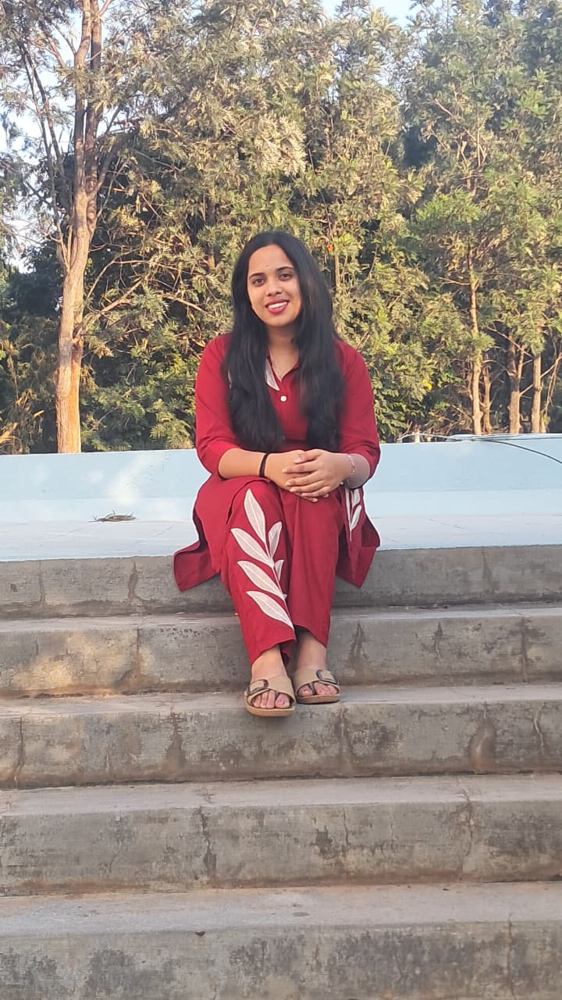
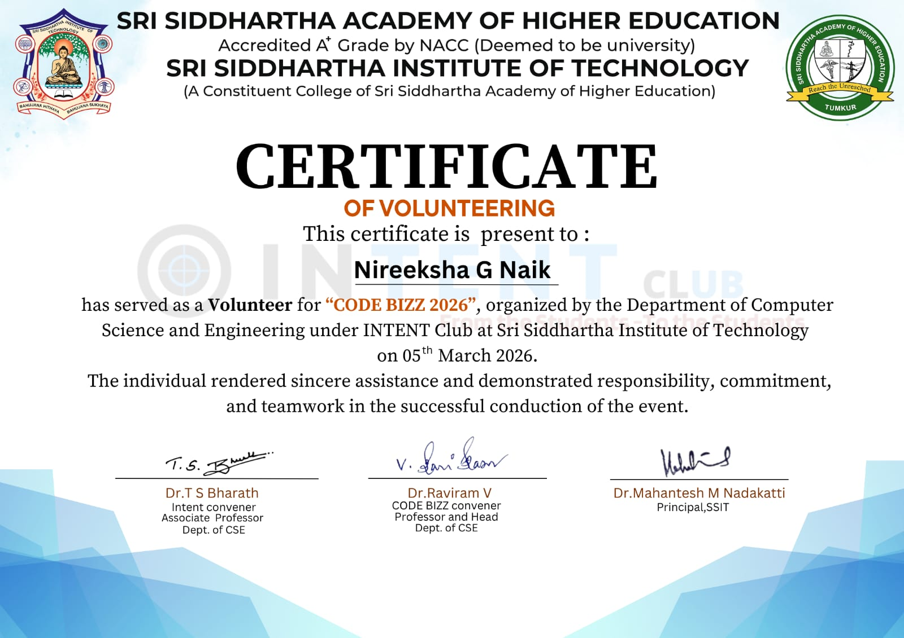
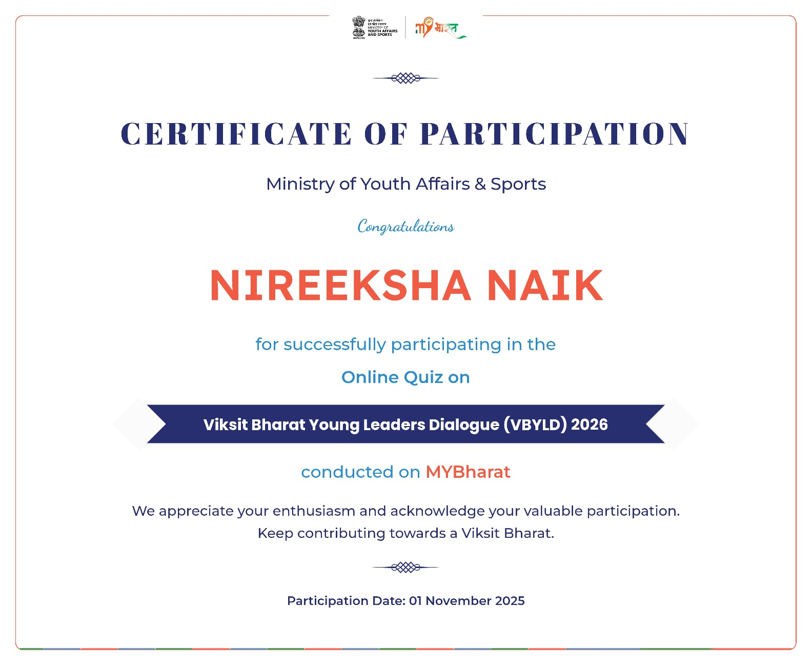
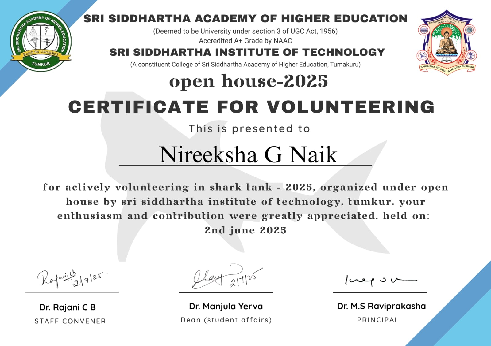

Aspiring Software Developer
I build real-world solutions, love solving problems, and constantly explore new technologies to grow as a developer.
Hire MeI am a 3rd year Computer Science Engineering student at Sri Siddhartha Institute of Technology, Tumakuru with a CGPA of 8.36. I am passionate about building applications that solve real-world problems and improving my skills every day.
I actively participate in hackathons, technical events, and leadership activities. I have experience working in teams, managing events, and contributing to impactful initiatives.
To become a highly skilled software developer by working on innovative and impactful projects, gaining real-world experience, and contributing to meaningful technological solutions.
🔍 Actively seeking internship opportunities and preparing for full-time software roles.
C, Python, Java, SQL, Data Structures, DBMS, Ada
HTML, CSS, JavaScript
Git, VS Code
Problem Solving, Leadership, Teamwork, Communication
Built an IoT-based system to track real-time crowd movement using sensors and automation.
Tech: Arduino, Sensors, IoT Kit
Developed a web app to help users find less crowded places using location-based insights.
Tech: HTML, CSS, JS, GPS

Code Bizz 2026 – Volunteer
Demonstrated leadership and coordination while organizing a technical event.

Viksit Bharat YLD 2026
Participated in a national-level initiative highlighting innovation and leadership.

Shark Tank Open House
Contributed to organizing an innovation-driven event showcasing teamwork.
Email: nireekshanaik6@gmail.com
GitHub: github.com/nireekshanaik
Open to Internship & Full-Time Opportunities
📄 View Resume ⬇ Download Resume